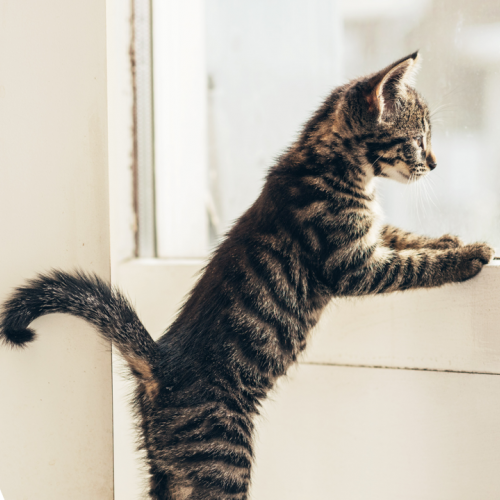

The cat (Felis catus) is a domestic species of small carnivorous mammal.[1][2] It is the only domesticated species in the family Felidae and is often referred to as the domestic cat to distinguish it from the wild members of the family.[4] A cat can either be a house cat, a farm cat or a feral cat; the latter ranges freely and avoids human contact.[5] Domestic cats are valued by humans for companionship and their ability to hunt rodents. About 60 cat breeds are recognized by various cat registries.[6]
